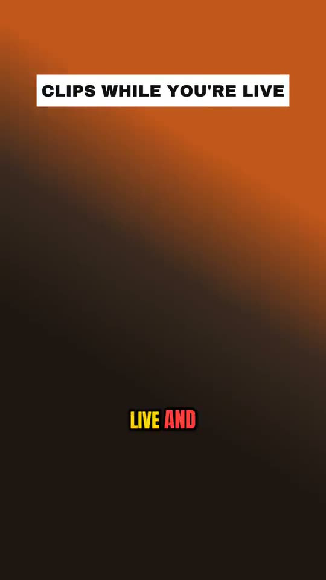

Long videos in.
Ready-to-post clips out.
PeakCut finds the best moments in a video or a live stream, then cuts them into captioned vertical clips. It runs on your own computer, so your videos stay with you.
Download for Windows

Why run it on your computer
Your videos stay privateNothing is uploaded to a PeakCut server. Videos and clips are saved on your own disk.
No sign-upOpen it and start. There is no account and no monthly fee.
Your own AI keyUse Gemini, OpenAI, Groq, or a local Ollama model. You pay your AI provider directly, if at all.
Get started
- Download
PeakCut-Setup.exe above and open it. If Windows shows a blue warning, choose More info, then Run anyway.
- Follow the installer (no administrator password needed), then start PeakCut from the Start menu or the desktop shortcut.
- The first start downloads the speech model (about 480 MB). After that, PeakCut opens in your browser.
- In Settings, AI, paste your AI key. Then paste a YouTube link or upload a video.
Keep the black window open while you use PeakCut. Close it to stop. Your clips are saved in %LOCALAPPDATA%\PeakCut\data.
Good to know
- Clipping uses your processor. A computer with 4 or more cores and 8 GB of RAM works best.
- The Windows warning appears because the program is not code-signed yet. The source code is open, so you can read it or build it yourself.
- Prefer to run it on a server for a team? See the source and server guide.